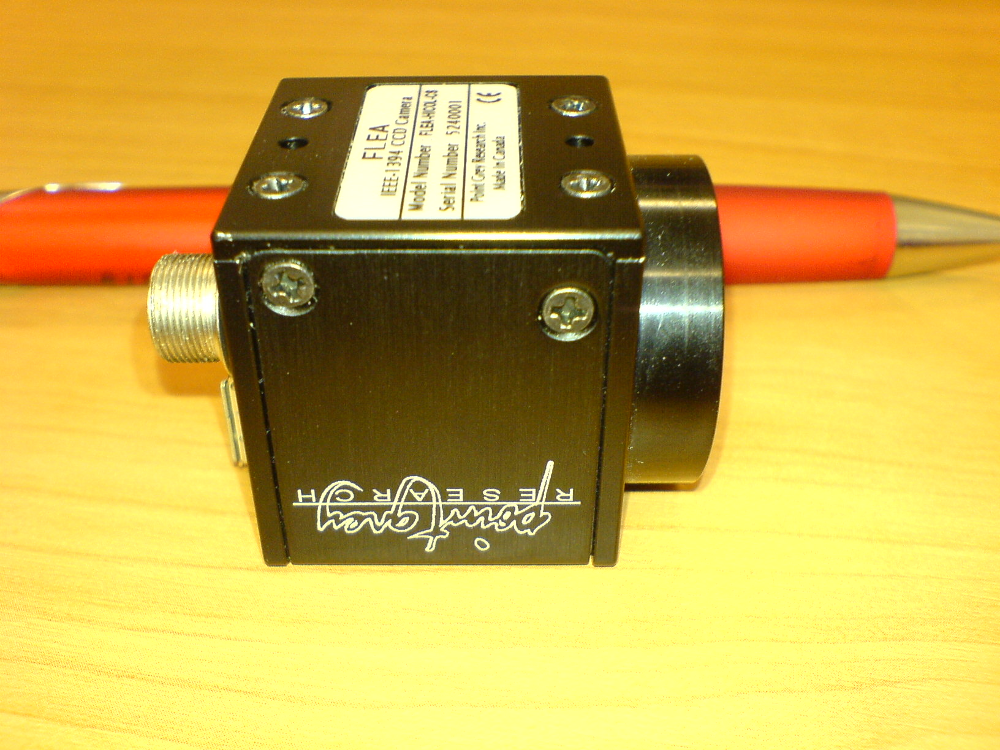
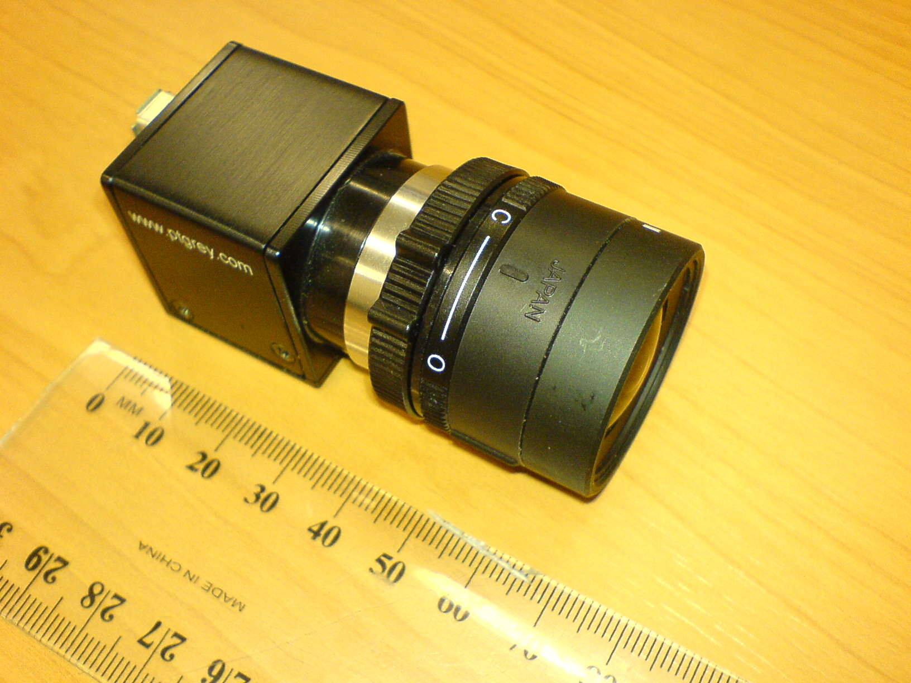
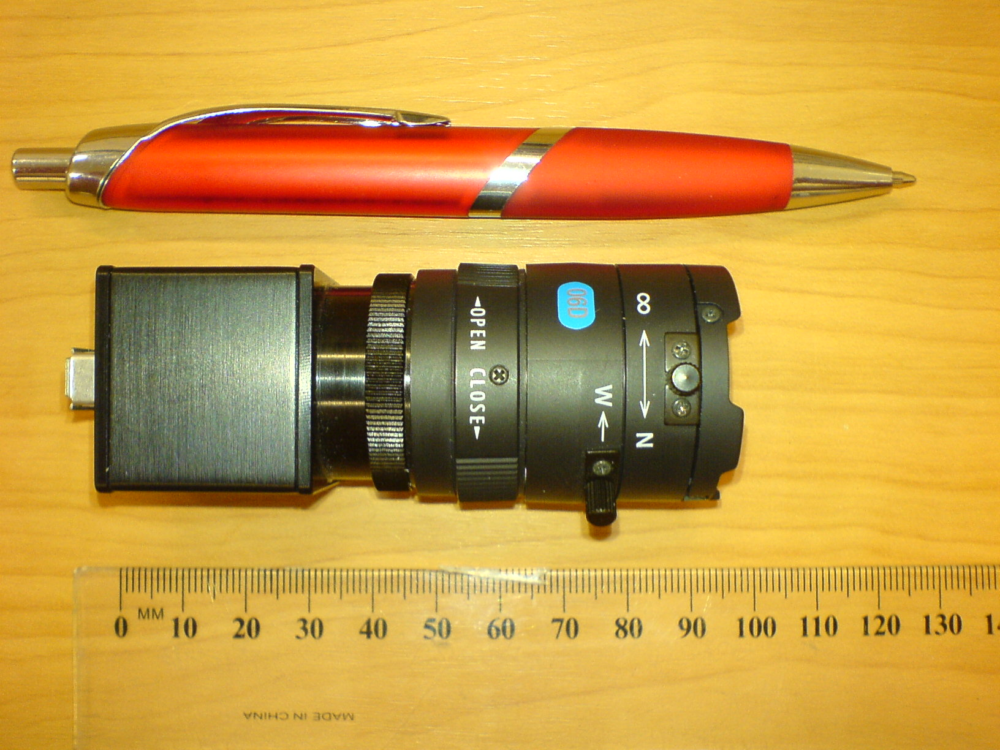
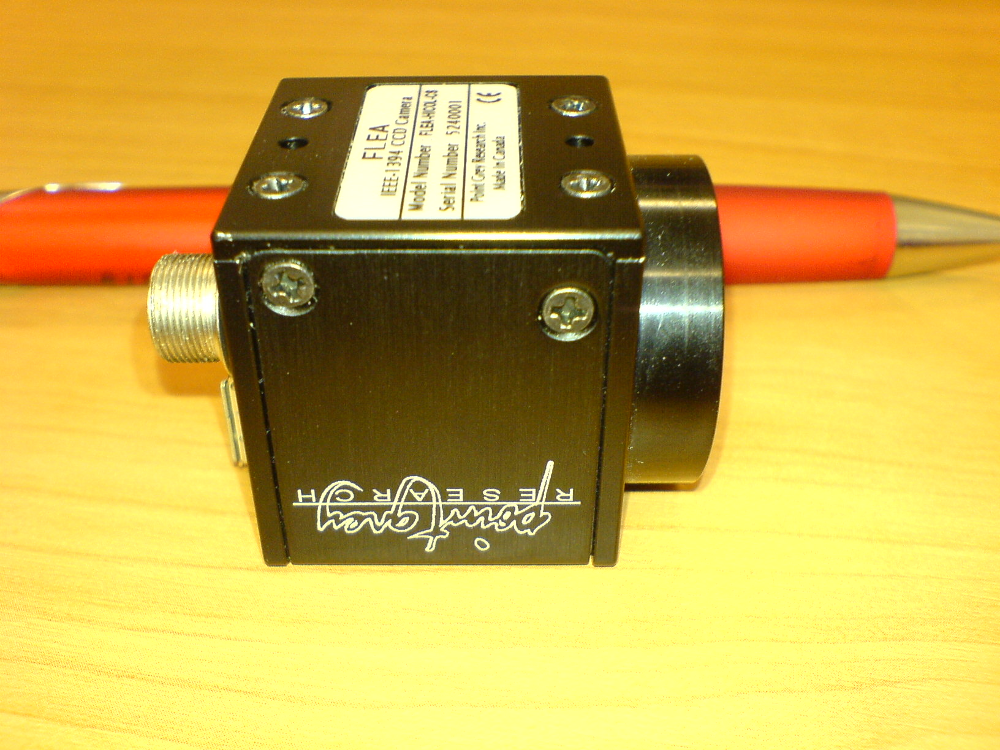
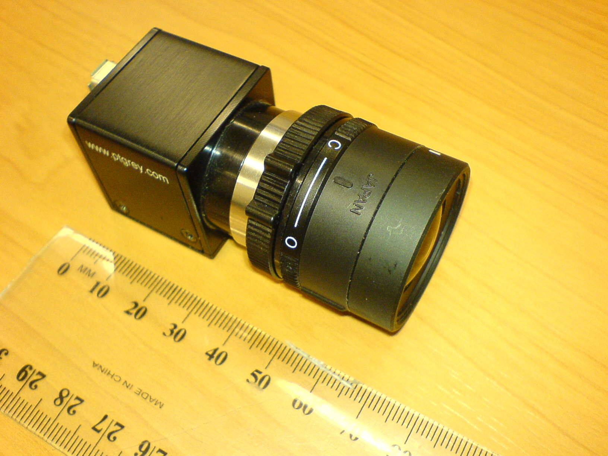
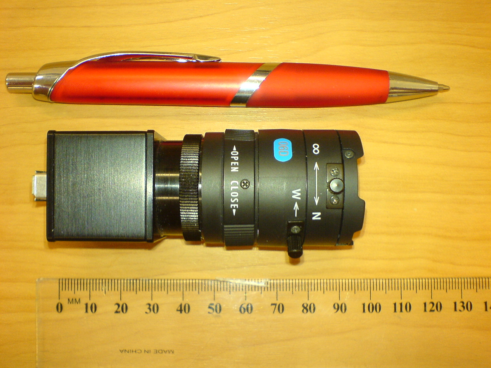These are variants on the same algorithm:
The sample tracking algorithm supplied with the ARToolKit examples displays a good usage strategy (code from simpleOSG.c, with extra commenting):
<pre> if (k != -1) { // Get the transformation between the marker and the real camera. //fprintf(stderr, "Saw object %d.\n", i); if (gObjectData[i].visible == 0) { // .visible is 0 when the marker was not seen in the previous frame. err = arGetTransMatSquare(gAR3DHandle, &(gARHandle->markerInfo[k]), gObjectData[i].marker_width, gObjectData[i].trans); } else { err = arGetTransMatSquareCont(gAR3DHandle, &(gARHandle->markerInfo[k]), gObjectData[i].trans, gObjectData[i].marker_width, gObjectData[i].trans); } gObjectData[i].visible = 1; // Next time around, arGetTransMatSquareCont will be used. } else { gObjectData[i].visible = 0; } </pre>
ARToolKit works best with a controlled optical environment, in which the image acquired by the camera has a high signal-to-noise ratio, and when the properties of the optical environment are well known; when the lighting is bright (so the camera gain is low, and depth of field is good), when the camera is a good quality camera (with a CMOS sensor, with a large sensor surface, and with good lenses with good light-gathering properties), and when the camera has been accurately calibrated. If any of these requirements can't be met, performance will be less than the ideal case, but in most cases still usable. See about hardware selection here
Of the decisions facing the AR system designer, camera selection is perhaps the most critical, as it has a large bearing on the results achievable through subsequent image processing (e.g. by ARToolKit).
The ultimate goal of the imaging system (the camera lens, sensor and on-chip processing) is to provide maximum signal-to-noise ratio in any acquired image. This is because the image processing performed by ARToolKit and other similar systems involves mathematical correlation operations for identification. Noise has a high self-correlation, and thus the presence of noise requires a higher correlation for correct marker identification. This reduces the discriminative capacity of the system.
The key optical variables of interest to ARToolKit are the light-gathering power of the lens (primarily a factor of its size), the camera aperture, and the sensor size. A larger lens and a larger physical sensor size are always desirable, so generally the choice of lens and sensor is determined primarily by cost and size constraints. Sensors on most consumer-level webcams are 1/4 inch CCD or CMOS sensors. More expensive cameras may increase the sensor size to 1/3 inch. High quality cameras designed for imaging applications will have sensor sizes of 1/2 inch or larger, but the price ratio from 1/4 inch to 1/2 inch can be 10x or more.
The camera aperture (the "shutter") is the third variable. Where the aperture is adjustable, opening it will allow more light onto the sensor, but this comes at the cost of depth-of-field. With the aperture wide open, objects at only a small range of depths will be in focus. If the aperture is closed down to a pinhole, all objects near and far will be in focus, but little light will reach the sensor, and thus pinhole apertures can only be used when external light conditions are very bright.
Logitech's cameras are a popular choice because of their relatively good quality/price ratio and their large range. The Quickcam range generally uses CMOS sensors, and the more expensive Quickcam Pro range, CCD sensors. Drawbacks of Logitech cameras include poor driver support on non-Windows platforms, and brain-amputated model naming; in one case, four radically different cameras produced over a period of 5 years have almost identical model names.
While consumer webcams provide satisfactory results in many types of AR application, for more demanding applications, professional camera equipment is in order. Professional camera equipment offers the following advantages over consumer webcams:
Particularly for optical tracking, it is important to be able to achieve a controlled balance between shutter speed (fast shutter reduces motion blur) and noise (in low light, increasing sensor gain amplifies the noise floor which can reduce recognition reliability). Most professional cameras offer controllable shutter speeds and gains.
Professional cameras generally contain high quality CCD (charge-coupled device) imaging elements, which provide superior imaging quality over the CMOS sensors commonly deployed in consumer-grade equipment.
1/2 inch CCDs used in pro cameras provide four times the light-gathering power of 1/4 inch CCDs used in consumer webcams. Additionally, they allow higher-resolution images even if using the same number of pixels.
Most consumer level webcams provide 640x480 or smaller video streams, and ones that provide higher-resolutions may not be able to stream at these high resolutions, or may “fake” these higher resolutions by interpolation.
Professional equipment typically uses high-bandwidth data buses, such as IEEE-1394 “Firewire” busses, which offer lower latency and greater throughput than USB2, as well as features such as daisy-chaining of multiple devices on one bus.
Professional cameras typically offer standardized fittings for lenses, such as c-mount, which allows fitting of simple variable focus, telephoto, wide angle, adjustable zoom, and variable aperture lenses, or even autofocus lenses.
The range of industrial cameras by Point Grey has become the de-facto standard for high-quality imaging in the AR application domain, thanks to their relatively low-cost, and flexibility. Point Grey cameras are supported in ARToolKit in the following ways:
This is an IEEE-1394 camera mounted in a steel housing, which accepts a variety of standard mini-mount lenses.
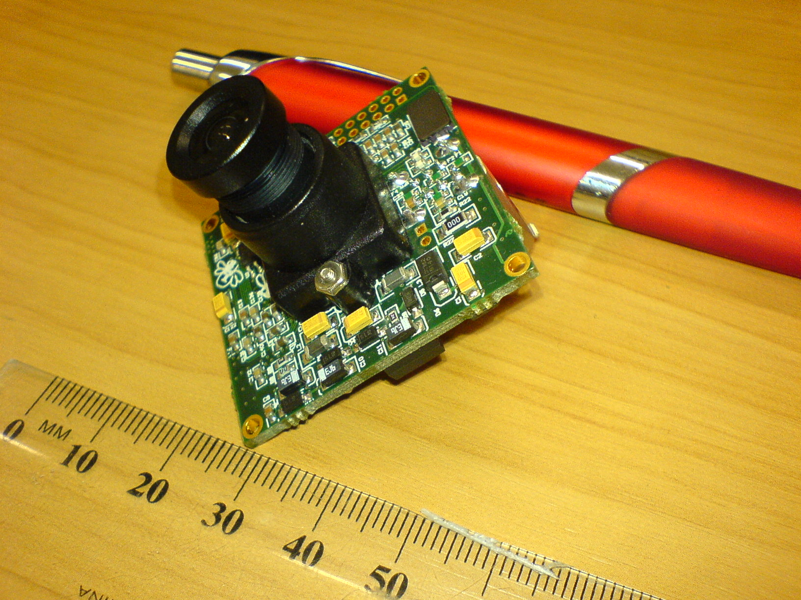 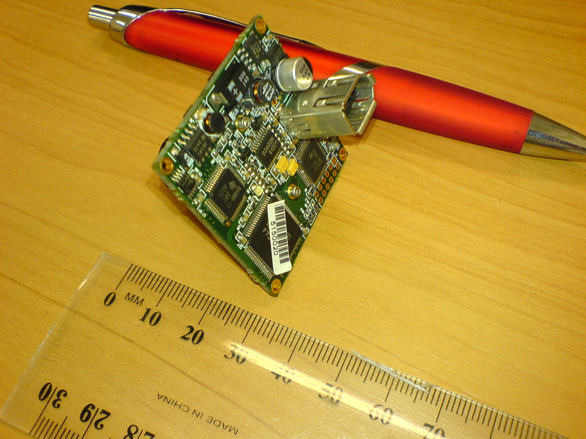
This is an IEEE-1394 camera mounted in a steel housing, which accepts a variety of standard C-mount lenses.
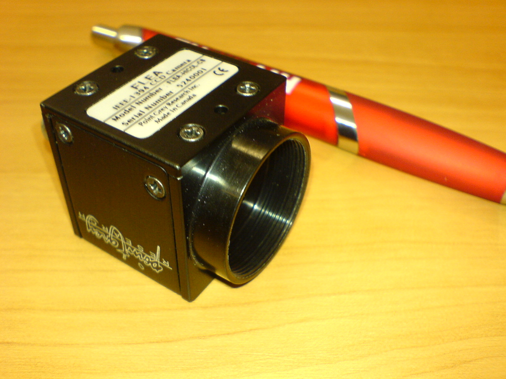
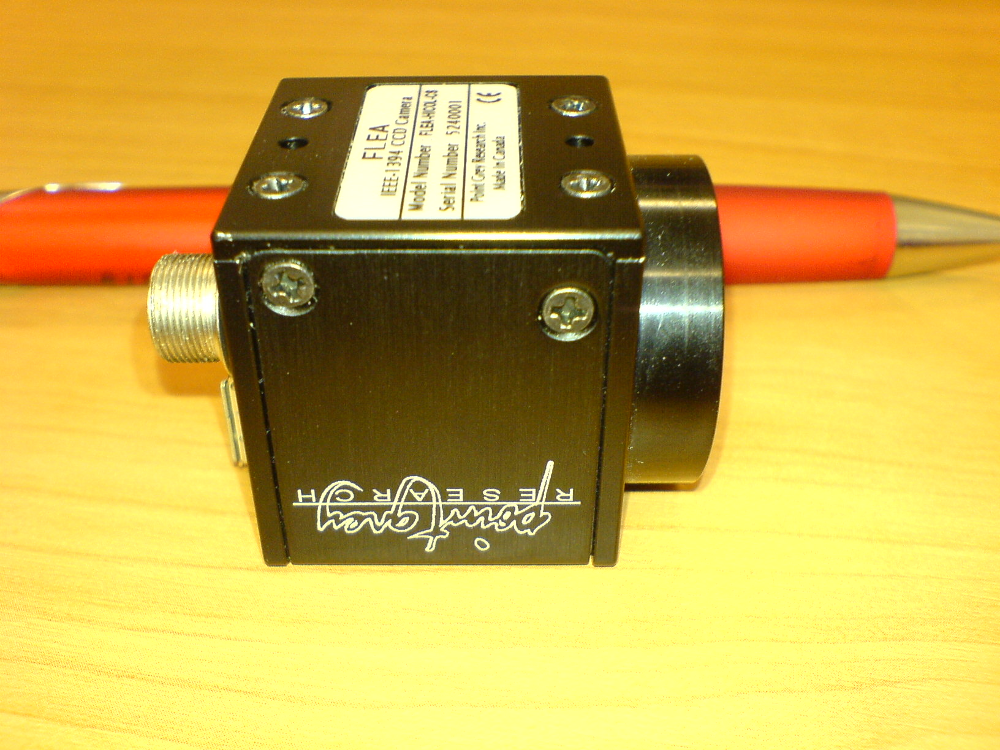
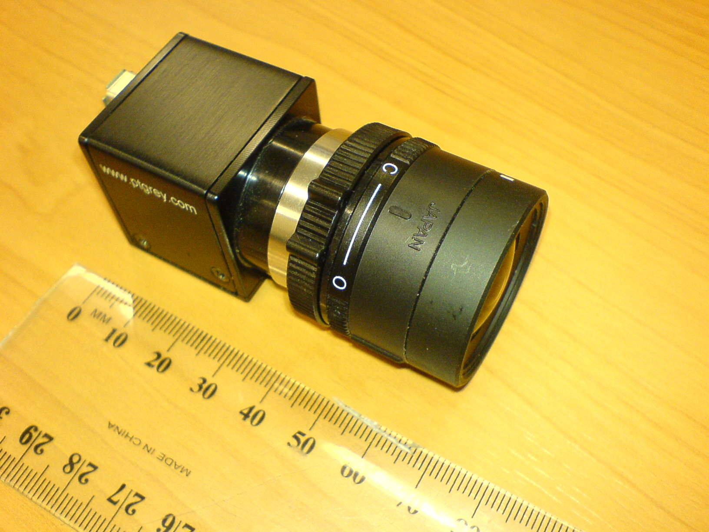
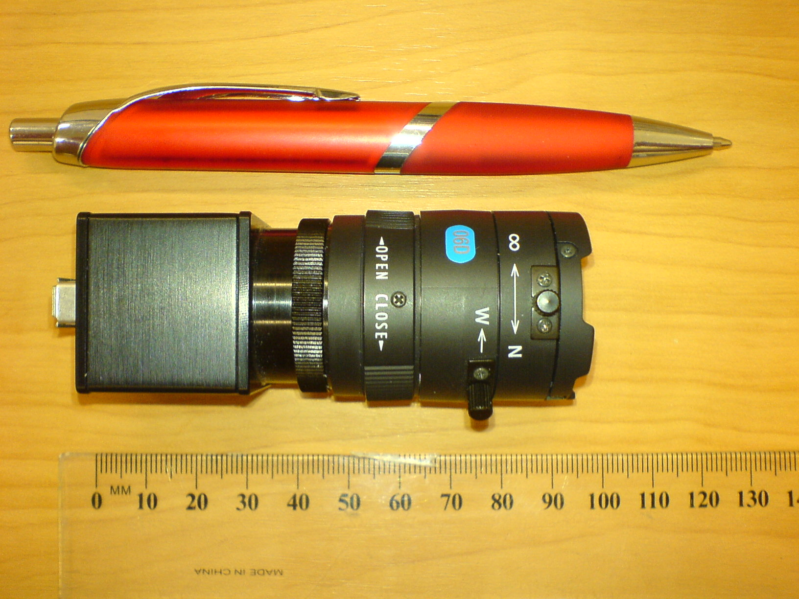
Imaging systems are a fascinating and complex area. We highly recommend Edmund Industrial Optics' guide for background information and further reading in this area.
If you have been supplied with pre-built ARToolKit binaries, you will not need to build ARToolKit from source. The instructions below apply only to users who wish to modify the internals of ARToolKit. Source code and project files are supplied for all of ARToolKit. This allows you to not only see how the toolkit works, but also to modify its operation should you so wish.
External dependencies for building ARToolKit from source include all the dependencies for building your own ARToolKit-based applications (as listed on page Installing ARToolKit) but also additional dependencies required to build the utilities and libraries. Where ARToolKit libraries require external DLLs, these are generally supplied with ARToolKit. Exceptions are listed below.
The free Microsoft Visual Studio Express Edition will also work.
Mac OS X:
Xcode 6 under Mac OS X 10.10 is recommended. These may be obtained free from Apple.
Linux:
Windows: OpenGL is provided as part of your graphic card diver.
Mac OS X: OpenGL is part of your OS X system.
Linux: Install libgl1-mesa-dev in order to be able to build ARToolKit.
Windows/Mac OS X: libjpeg headers and libraries are supplied with ARToolKit.
Linux: install package libjpeg-dev.
Required to build libARgsub and the utilities and examples. Note: libARgsub_lite provides equivalent functionality to libARgsub without requiring GLUT.
Windows: GLUT 3.7.6 is included with ARToolKit.
Mac OS X: included in OS.
Linux: GLUT should be available in your distribution (e.g. packages freeglut3-dev and xorg-dev). Otherwise, GLUT is included in the MESA 3D libraries (e.g. libgl1-mesa-dev)
Generally OpenCV headers and libraries are provided with ARToolKit.
On Linux the provided OpenCV libraries are build using Clang compiler. Using ./Configuration make to build you have the option to choose between Clang and GNU compiler for building ARToolKit.
GNU: We recommend building ARToolKit with GNU gcc and g++ (answer fist question of the configuration script with no). GNU is recommended because the OpenSceneGraph libraries provided by the package manager of your distribution are also build with GNU. However this leads to the result that you need to install the OpenCV libraries manually sudo apt-get install libopencv-dev.
libc++-dev. Be aware that libARosg and some examples are excluded from this build because per default OpenSceneGraph comes compiled with GNU. If you would like to use them you need to compile OpenSceneGraph with Clang and then build libARosg and the examples manually.Canon's HDCam64 camera control library (Canon HDCam64 users only).
Mac OS X: QuickTime v6.4 or later is required, and is included in all versions of Mac OS X > 10.3. For systems with QuickTime 7 or later, QTKit is also used.
Linux: Video4Linux, lib1394dc, or GStreamer is required. The corresponding packages required to be installed in your package manager are:
If you would like to work with 3D models which are represented in a Virtual Reality Modeling Language (VRML) file then you need to install the OpenVRML SDK in order for ARToolKit to be able to render them. All the source code related to VRML is located in the ARvrml.lib.
fink -b install openvrml6-dev openvrml-gl6-dev. Alternately, a Universal binary build of OpenVRML-0.16.6 suitable for inclusion in application bundles can be downloaded from here.In general you can find information about OpenSceneGraph (OSG) and what it does on their website. ARToolKit uses some of the features provided by OSG. All these features are available using the ARosg.lib.
In general you need to install OSG on Mac and Windows when you like to build the complete ARToolKit project. On Linux you can choose in the ./Configure step if you would like to use OSG. ARToolKit requires version 2.6 or later, version 2.8.2 is recommended.
Windows: OSG_ROOT=Path to where you extracted OSG files to
Linux: OpenSceneGraph is available as a package for most Linux distributions (e.g. package libopenscenegraph-dev).
./Configure; make During the configure process, you will be asked to select video libraries to build against.ARToolKit includes a variety of examples demonstrating ARToolKit programming techniques. After compiling, the executables for these applications can be found in the bin directory inside your ARToolKit directory. Running the simpleLight example is one of the most straight-forward ways to test that your ARToolKit installation is functioning correctly. An explanation of simpleLight, including how to run it, and its source code can be found on the page ARToolKit Tutorial 1: First Simple ARToolKit Scene. More detailed information about the techniques demonstrated in each example can be found on the page ARToolKit Examples.
simpleLite can be opened by double-clicking its icon in the ARToolKit4\bin directory. Alternately, you can run it from the command line:
simpleLite can be launched from a terminal window thus: ./simpleLite
Click here to see how to set an environment variable
ARToolKit is one of the few augmented reality tracking libraries with support for stereo tracking. What do we mean by stereo tracking? We mean that video streams from more than one camera can be simultaneously input into ARToolKit, and ARToolKit will extract tracking data from both video streams. When a tracked surface (a marker, a barcode marker a multimarker set, or a textured NFT surface) is in view of both cameras, the accuracy of tracking is potentially improved over the same tracking performed with a single camera.
Input from two cameras also provides the potential to display two images to the user, should that be appropriate, although it is perfectly permissible to display just one of the video streams while tracking from both.
Throughout this document, we will be referring to "left" and "right" cameras. We think of these cameras viewing a scene in the same sense as our eyes viewing the scene. That is, when looking at the scene in the same direction as the cameras are looking, we refer to the camera on our left as "left" and on our right as "right". Note, however, that the camera relationship need not actually be left and right. We could just as well name them "camera A" and "camera B" and use a stereo rig in which the cameras are offset vertically rather than horizontally, or even opposite each other! The only practical constraint is that both cameras will need to be able to see the tracked surface (marker or NFT texture) simultaneously for stereo tracking to be of advantage in improving accuracy. If only one camera can see the marker at once, the tracking quality will be the same for monocular tracking by that camera alone.
The following sections will help advise on the best stereo system setup.
In order to get improved tracking data from stereo camera input, each camera must be accurately calibrated (the lens calibrations) and the relationship between the two cameras (the stereo calibration) must be precisely known. Fortunately, ARToolKit provides easy-to-use utilities to help with these tasks; calib_camera and calib_stereo, respectively. However, it is generally not possible to use stereo tracking in situations where the cameras can move relative to each other during use. The expected scenario is a camera rig where the cameras are permanently mounted relative to each other, or are combined into a single physical housing.
Stereo tracking will likely at least double the data being processed by ARToolKit, at all stages of the tracking pipeline. This requires careful consideration of the system used for the tracking. Here are some questions to consider:
Hardware selection is important in choosing a stereo rig. There are a variety of professional-level stereo cameras available in the market, or depending on your needs, you might wish to build your own stereo rig. Cameras such as the "Bumblebee" range from Point Grey which contain two matched cameras in a single housing with a single I/O bus are very convenient, and might even allow for stereo presentation to the user (using a stereo display). However, for some tracking applications, an even greater degree of stereo disparity (the distance between the cameras) may be desirable, justifying a custom mount for two separate cameras. This comes at an increased cost in setup, plus the need to accommodate two I/O buses.
It is not necessary that both cameras be identical in terms of lenses, sensors, or quality. However, if the aim of the stereo rig is to increase accuracy, it is advisable to make sure the two cameras are similar in terms of optical pathway quality (lens, sensor etc) as the achievable accuracy will be limited by the camera with the lower specification.
In some of the examples below, to illustrate ARToolKit's flexibility in this regard, you can see tracking from two consumer-level cameras (one a 4:3 ratio 1600x1200 sensor and the other a 5:4 1280x1024 sensor).
Stereo calibration is an essential step in stereo tracking. This is the step where the relationship between the two cameras (the precise offset and orientation from the sensor of one camera to the sensor of the other) is determined. ARToolKit provides the utility "calib_stereo" to perform this task. calib_stereo works by knowing in advance the calibrated lens parameters of each camera, and then tracking the calibration chessboard pattern simultaneously with both cameras to infer the relative offset and orientation of each camera. Thus, before performing stereo calibration, you must have carefully calibrated each camera separately.
Using more than one camera simultaneously may require you to grapple with a problem you haven't encountered previously: how to get ARToolKit to choose the correct camera for use with an operation such as lens calibration with calib_camera. This is performed by using ARToolKit's video configuration capabilities. The exact video configuration options required to choose a particular camera vary between platforms, but can generally be specified to allow you to choose between cameras.
In the utilities calib_camera and calib_stereo, you will find command-line options allow you to specify strings to use as video configurations.
E.g. to select the second video device on your system for use with calib_camera: On Linux, type:
<pre> ./calib_camera --vconf "-device=GStreamer v4l2src device=/dev/video1 use-fixed-fps=false ! ffmpegcolorspace ! video/x-raw-rgb,bpp=24 ! identity name=artoolkit sync=true ! fakesink" </pre> On OS X, type: <pre> ./calib_camera --vconf "-device=QuickTime7 -source=1" </pre> On Windows, type: <pre> calib_camera.exe --vconf "-device=WinDS -devNum=2" </pre>
Similar options apply to calib_stereo, except the parameters are named with L and R suffixes:
<pre> ./calib_camera --vconfL "left config" --vconfR "right config" </pre>
See Configuring video capture for complete lists of video configuration options for each platform and video input module.
calib_stereo looks for the calibration information for each lens in the files Data/cparaL.dat and Data/cparaR.dat, for left and right cameras respectively. However, you can name these files as you wish, and just supply the pathnames to each using calib_stereo's command-line parameters:
<pre> ./calib_stereo -cparaL=left calibration file -cparaR=right calibration file </pre>
Open a terminal / command prompt (on Mac OS X / Linux, open a Terminal window; on Windows, choose "Run" from the Start menu, type "cmd"). Then run the calib_stereo program from that window. On Linux / OS X, type:
<pre> ./calib_stereo </pre> On Windows, type: <pre> calib_stereo.exe </pre>
Also supply any required video config and camera calibration file names. You will see output similar to this in your terminal:
<pre> ./calib_stereo --vconfL "-source=0" --vconfR "-source=1" -cparaL=quickcamvisionpromac.dat -cparaR=creativelivecamoptiapro.dat CHESSBOARD_CORNER_NUM_X = 7 CHESSBOARD_CORNER_NUM_Y = 5 CHESSBOARD_PATTERN_WIDTH = 30.000000 CALIB_IMAGE_NUM = 10 Video parameter Left../_media/ -source=0 Video parameter Right: -source=1 Camera parameter Left../_media/ quickcamvisionpromac.dat Camera parameter Right: creativelivecamoptiapro.dat Using supplied video config "-source=0". Video formatType is BGRA, size is 1600x1200. Using supplied video config "-source=1". Video formatType is BGRA, size is 1280x1024. Image size for the left camera = (1600,1200) Image size for the right camera = (1280,1024) Camera Parameter for the left camera -------------------------------------- SIZE = 1600, 1200 Distortion factor: k1=0.0791388974, k2=-0.1812048256, p1=-0.0013435410, p2=-0.0004586111 fx=1338.975677, fy=1326.604156, x0=790.253296, y0=558.685112, s=0.990136 1352.31544 0.00000 790.25330 0.00000 0.00000 1339.82066 558.68511 0.00000 0.00000 0.00000 1.00000 0.00000 -------------------------------------- Camera Parameter for the right camera -------------------------------------- SIZE = 1280, 1024 Distortion factor: k1=-0.0694990978, k2=0.0262184255, p1=0.0020496645, p2=0.0001065184 fx=1197.882080, fy=1192.068604, x0=646.941895, y0=525.006226, s=1.009049 1187.14020 0.00000 646.94189 0.00000 0.00000 1181.37885 525.00623 0.00000 0.00000 0.00000 1.00000 0.00000 -------------------------------------- Scaling 2880x1200 window by 0.600 to fit onto 1920x1080 screen (with 10% margin). </pre>
At this point, if everything has loaded OK and the cameras can be opened, you should see the images from the camera appear (side by side in a single window).
Calibration requires the capturing of a series of images with both cameras. In the top-left corner of the capture window is displayed the number of images captured so far. Position the chessboard grid so that it is visible to both cameras, and the inner corners of the squares will be highlighted with "X" marks and numbered. When the cameras can clearly see all the intermediate corners, the X marks turn RED, and a calibration image can be captured:

If some of the corners are obscured by the edges of the camera frame, or poor lighting or reflection, the crosses will be GREEN, and no calibration image can be captured until the optical conditions are changed.
Once you have an image with all red crosses, you can press the spacebar on the keyboard. The image will be captured, and the locations of the X points will be printed to the terminal window, and the counter will increment.
In order to obtain a good calibration for the cameras, it is important to obtain images of the calibration board at a variety of angles to the camera lenses.
Once all the calibration images have been captured (10 by default), the stereo calibration data will be calculated and output to the terminal window, and you will be prompted for a file name for the calibration data.
If you need to, the size of the calibration squares, the number of intermediate corners in horizontal and vertical directions (i.e. the number of rows minus 1 and the number of columns minus 1), and the number of calibration images captured can all be adjusted from the command line. Running the utility with the --help option will show the various command-line options for adjusting the default calibration settings.
On Linux / OS X, type:
<pre> ./calib_stereo --help </pre> On Windows, type: <pre> calib_stereo.exe --help </pre>
The help text is reproduced here:
<pre> Usage: ./calib_stereo [options] -cornerx=n: specify the number of corners on chessboard in X direction. -cornery=n: specify the number of corners on chessboard in Y direction. -imagenum=n: specify the number of images captured for calibration. -pattwidth=n: specify the square width in the chessbaord. --cparaL <camera parameter file for the Left camera> --cparaR <camera parameter file for the Right camera> -cparaL=<camera parameter file for the Left camera> -cparaR=<camera parameter file for the Right camera> --vconfL <video parameter for the Left camera> --vconfR <video parameter for the Right camera> -h -help --help: show this message </pre>
Traditionally, applications built on ARToolKit use a video feed on which augmentations are overlaid. ARToolKit also supports using optical see-through displays for augmented reality. Instead of rendering both the background camera feed and the augmentations, the optical see-through display renders the augmentations, and background is the world around you. Examples of higher-end see-through HMDs (head-mounted devices) include the DAQRI Smart Helmet and the Epson Moverio.
If your see-through display is a stereo display (one display for each eye), you are able to render stereoscopically (providing depth) with an optical see-through display, rendering a different perspective for each eye. Regardless of whether you are using a monocular or stereo display, there is the benefit that there is no separation from the real world - You're not looking at the world around you put up on a screen..
Be aware, however, that benefit can also cause issues - There will always be some lag between the augmentations displayed on the optics and the real world passing by behind them. Nowadays, with higher-end devices it is much less noticeable, but older devices will struggle with this lag, or "swimming" effect.
For a full discussion of the advantages and disadvantages of optical and video see-through AR, you can refer to Ron Azuma's course notes on Augmented Reality.
For the most accurate registration, that is, alignment between your eyes, the augmentations, and the world, it is necessary to know the position of the user's eyes relative to the display optics, and the camera which tracks the world. With ARToolKit, this is achieved by a simple self-calibration method in which the user holds a calibration pattern in front of the eye and lines up the pattern with a virtual cross hair shown in the see-through display. In an ideal world, the eye position calibration should be done each time a user starts the AR application, especially if it is a different user.
Before calibrating the displays themselves, you must first calibrate your camera. This is extra important when using a stereo display as any registration error (any offset in position between the real world object and its viewed position in the display) will be much more obvious when viewing stereoscopically, and will normally be perceived as the depth of the augmentation being incorrect.
The calib_optical utility is used to calibrate the displays to the camera position. Calibration is done monocularly (one eye, one perspective at a time), and as such should be conducted for each eye in turn (run first for one eye with the other closed, and then vice-versa). You will use spacebar when required for most configuration actions. It is used as follows:

If at any point you need to see the video-image (temporarily, e.g. to see if the camera is correctly focussed or has correct brightness or contrast) press the "o" key. While in this mode, you can press "d" to see the debug (binarized image) and "-" and "+" to adjust the binarization threshold to get nice black and white borders on the pattern.
After taking ten measurements, the white cross hairs will disappear and the calibrated eye position will be printed out, looking something like this:
<pre> ./calib_opticalCamera image size (x,y) = (640,480) Reading camera parameters from Data/camera_para.dat (distortion function version 3). Camera Parameter -------------------------------------- SIZE = 640, 480 Distortion factor = 311.500000 226.000000 1.006924 1.000000 11.000000 4.400000 804.38635 0.00000 312.50000 0.00000 0.00000 803.87536 239.00000 0.00000 0.00000 0.00000 1.00000 0.00000 -------------------------------------- ProcMode (X) ../_media/ FRAME IMAGE DrawMode (C) ../_media/ TEXTURE MAPPING (FULL RESOLUTION) TemplateMatchingMode (M) ../_media/ Color Template Window was resized to 640x480. Camera image of 640x480 will be scaled by 1.000000 (h) and 1.000000 (v). CTYPE = 2vuy Beginning optical see-through calibration. Position 1 (far) captured. -- 3D position -115.184635, 57.446030, 564.060060. -- 2D position 160.000000, 120.000000. Position 1 (near) captured. -- 3D position -103.269729, 60.947248, 410.983793. -- 2D position 160.000000, 120.000000. Position 2 (far) captured. -- 3D position 55.854849, 60.853172, 547.750355. -- 2D position 480.000000, 120.000000. Position 2 (near) captured. -- 3D position 21.727804, 60.089365, 391.802531. -- 2D position 480.000000, 120.000000. Position 3 (far) captured. -- 3D position -27.638938, -10.452357, 562.451288. -- 2D position 320.000000, 240.000000. Position 3 (near) captured. -- 3D position -48.164517, 28.288982, 297.542144. -- 2D position 320.000000, 240.000000. Position 4 (far) captured. -- 3D position -110.804220, -80.708711, 567.940307. -- 2D position 160.000000, 360.000000. Position 4 (near) captured. -- 3D position -96.756636, -22.429633, 361.695711. -- 2D position 160.000000, 360.000000. Position 5 (far) captured. -- 3D position 61.444556, -77.380158, 556.955252. -- 2D position 480.000000, 360.000000. Position 5 (near) captured. -- 3D position 42.332470, -56.220412, 461.777917. -- 2D position 480.000000, 360.000000. Expressed relative to camera axes, eye is -70.561950 mm to the right, -70.495486 mm above, and 30.678455 mm behind the camera. Eyepoint error is 124.106253. -------------------------------------- Field-of-view vertical, horizontal = 27.056970, 32.055244 degrees, aspect ratio = 1.184731 Transformation (eye to camera) = 0.98718 -0.14631 0.05781 -70.56195 0.15453 0.96684 -0.11723 -70.49549 -0.03987 0.12466 0.97706 30.67845 0.00000 0.00000 0.00000 1.00000 -------------------------------------- Optical display parameters and eye to camera transformation matrix saved to file optical_param.dat. </pre>
You will note that a measurement of the calibration error is generated. The lower this value, the more accurate the calibration.
At this point you will be prompted for the name of the file in which to save the calibration results. If you are calibrating a stereo display, switch eyes and repeat steps 3 through 8 to capture ten measurements for the other eye. Although the calibration process may appear quite time consuming, with practice it can be completed in just a couple of minutes and should produce good optical viewing results.
The applications for monocular and stereo optical displays are examples for desktop demonstrating optical see-through with a calibrated camera and display. These applications are a good way to test your optical configuration(s), completed above.
You will want to move the newly-generated calibration files into the Data/ directory of your application.
The ARToolKit Unity plugin supports both monocular and stereo see-through rendering out-of-the-box. For stereo, only half-width side-by-side stereo mode is supported currently, as used in e.g. the Epson Moverio BT-200 display.
To use the optical calibration results in ARToolKit for Unity, the parameters file must be renamed and moved into the correct location inside your Unity project. The correct location is inside a folder at path Assets/Resources/ardata/optical inside your Unity project. Unlike on other platforms or renderers, the file name must end with the suffix ".bytes" for Unity to recognize it. E.g. If your parameters file is named "optical_param.dat", rename it to "optical_param.bytes" and drop it into this folder. The first part of the filename can be named to help you identify the parameters.
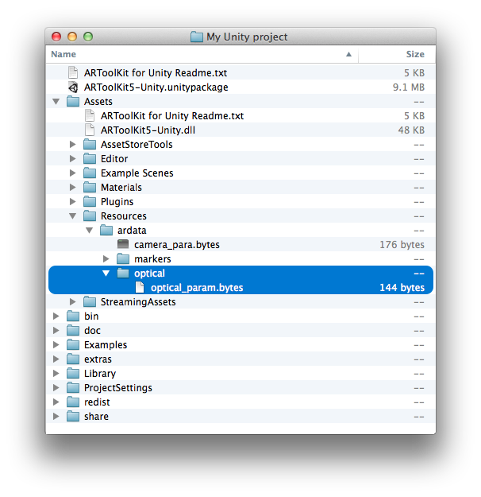
Once the parameters file is in this location, optical mode should be enabled in the "ARCamera" component in your Unity project. A popup will show a list of all available ".bytes" files in the Assets/Resources/ardata/optical folder. Select the preferred parameters file.
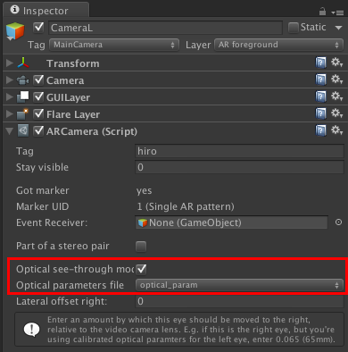
By default, when using optical mode, the video background is initially turned off. If you want to see the video image, press Enter (desktop platforms) or Menu (Android) and use the on-screen control to toggle the video background on or off. This, of course, can be changed by modifying the scripts.
Stereo optical see-through is set up in Unity by taking an existing Camera object with an ARCamera script attached, and duplicating it (in the Unity Editor, select the Camera game object, then choose "Edit->Duplicate" from the menu bar). You can rename the cameras to make clear which camera corresponds to which eye, as in this example:
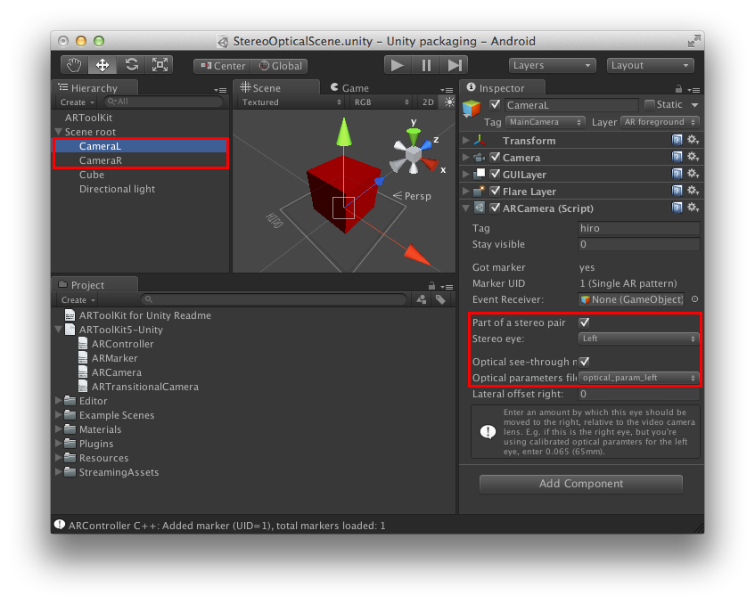
On each camera, tick the boxes “Part of a stereo pair” and “Optical see-through mode”. On the desired “left” camera, choose “Stereo eye: left” and select the calibrated optical parameters file for the left eye from the "Optical parameters file" popup. Repeat step 4 for the right eye.
The Unity plugin also supports an alternative configuration for stereo optical- Optical calibration is instead performed only for one eye, and then this value is used for both eyes with a manual "offset" value applied to the second eye. This arrangement is better when the distance between the eyes can be accurately estimated. You might wish to use the adult-population average eye separation of 0.065 metres (65 millimetres, or 2.56 inches).
To set up in this way, set up as above, but choose the same "Optical parameters file" popup for both left and right eyes. Then, if the optical calibration is for the right eye, enter a negative value in the box labelled "Lateral offset right" for the left eye camera, e.g. -0.065. If the optical calibration file is for the left eye, enter a positive value in the box for the right eye camera, e.g. 0.065.
While optical see-through AR is an attractive ideal, in practice it is very difficult to achieve accurate registration with optical see-through AR systems. (Registration is the alignment of the virtual objects shown in the display and their real-world referent). Most of these limitations come from the properties of the display itself, not the calibration procedures.
Optical see-through calibration depends on accurately knowing the precise relationship of two optical apertures: the iris of the camera imaging the scene, and the iris of the eye of the user viewing the scene. We can estimate the relationship between the two by measuring the distance between the display being used to produce the imagery and the lens of the camera, but the position of the iris of the eye of the user and the display is not fixed. We can attempt to control this relationship by fixing the display very tightly in place on the user's head, but its position will differ by small amounts between sessions and between users. Even when accurate calibration has been achieved, a tiny shift in the position of the display relative to the user's eye can produce a significant offset in registration of objects in the scene. Unless using a headset which includes eye-tracking, accuracy of registration is limited.
Of course, alignment between virtual and real objects is desirable for video see-through too, but in video see-through the users see the virtual objects overlaid on the source image being used for tracking. There is minimal registration error between the video stream and the overlaid objects, and the misalignment of the video stream and the real scene behind and around it is much less noticeable to the user. This is one of the key reasons why video see-through display has become so widely used in AR research.
ARToolKit can use OpenSceneGraph to render 3D scenes. Access to OSG features are facilitated by the ARosg.lib component of the ARToolKit SDK. ARosg.lib is linked against OSG binaries. ARToolKit examples like simpleOSG use the ARosg.lib library to access OSG functions.
ARToolKit currently uses the following OSG functions:
Detailed information can be found in the source code documentation of ARosg see ARTOOLKIT_ROOT/doc/apiref/arosg_h.
ARToolKit uses video libraries as a standardized way of accessing video capture hardware (like webcams) on your computer. On Windows, you have the option of using QuickTime or DirectShow. On OS X, we use QuickTime.
DirectShow is Microsoft's media-handling library on the Windows Platform. While the DirectShow libraries are in every release of Windows, and can be used right away, compiling applications that use the DirectShow SDK is difficult. This is mostly due to Microsoft's determination to force all users of video into using its digital rights management model (as found in Windows Vista's Media Foundation library) and the consequent withdrawal of the DirectShow SDK from the larger DirectX SDK and Visual Studio SDKs.
Because the process of installing the DirectShow SDK is tiresome, we supply compiled binaries of ARToolKit to customers - unless customers want to recompile libARvideo on Windows, installing the DirectShow SDK is unnecessary. For customers who do wish to recompile libARvideo for their own purposes, the following guide should be of help.
QuickTime is Apple's media-handling library, available on both Mac OS X and the Windows platforms. One benefit QuickTime has over DirectShow is the ability to read pre-recorded video from files on disk or via network streaming (for uses such as calibrating a camera on a device which the tools do not run).
While the QuickTime libraries and SDK are in every release of Mac OS X, and can be used right away; they are not installed by default on Windows. Every user who wants to run an ARToolKit application that uses QuickTime for video capture on Windows will need to install QuickTime. This is not onerous - any user who already has iTunes for Windows installed will have QuickTime installed already. Other users should visit the QuickTime for Windows download page.
Additionally, for customers using Windows who do wish to recompile libARvideo for their own purposes, the QuickTime SDK must be downloaded and installed.
Visual Studio 2013 is supplied with Windows SDK 8.1, which includes the required DirectShow link libraries, and some of the required headers. Interestingly, it also includes strmbase.lib, the library implementing the DirectShow base classes, but unfortunately does not include either the Debug version of this library (strmbasd.lib) or the header files. These would normally be required to be manually installed from the Windows SDK 7.1 samples package. However, we have made a package which includes the DirectShow base classes source and compiled libraries for 32-bit and 64-bit architectures.
Download the DirectShow base classes package.
If the package is un-RARed retaining the absolute paths, the final package path will be something similar to: C:\Program Files\Microsoft SDKs\Windows\v7.1\Samples\multimedia\directshow\baseclasses\. No further configuration is required.
Depending on which version of the Microsoft developer tools and/or SDK version you are using, the components of the DirectShow SDK may be split across two packages. These instructions are targeted at the simplest way to get the SDK working.
You can only use the "Standard" or above version of Microsoft Visual Studio to compile libARvideo's DirectShow modules. Visual Studio "Express Edition" will not work, since the Express Edition does not support ATL (which is used by the DirectShow code) 1
Once you have installed the DirectX SDK (and Platform SDK if using VS2005), you need to tell Visual Studio where to find their header and library directories. Otherwise, when the ARToolKit source tries to include these files, Visual Studio won't know where to look for them. The way to tell VS where to look for files is to add them to the "search path" in the VS options.
Mac OS X: The QuickTime SDK is installed by default along with XCode, and no further action should be needed.
Windows: Download the QuickTime SDK for Windows. We recommend installing the SDK to the default location, C:\\Program Files\\QuickTime SDK. This is because the paths in ARToolKit’s build files expect this location.
ARToolKit's build files expect to find QuickTime at C:\\Program Files\\QuickTime SDK. Unless you change this location, no further setup is required.
libARvideo will include the video interface defined in AR/config.h. To use DirectShow (default), define AR_INPUT_WINDOWS_DIRECTSHOW. To use QuickTime, define AR_INPUT_QUICKTIME. To define a constant, open AR/config.h', locate the desired constant block, and change the#undefin front of the variable to#define`.
Note: Defining AR_INPUT_QUICKTIME enables the use of QuickTime, but does not make it the default video interface. If you also wish to have the QuickTime module used by default, locate the constant AR_DEFAULT_INPUT_QUICKTIME in AR/config.h and enable it as described above. The QuickTime module can be selected at runtime by passing -device=QUICKTIME in the video config string (the parameter to arVideoOpen()).
From there, compiling should be just a matter of right-clicking on "ARVideo" in the solution explorer and choosing "Build."
If you are having difficulty with these instructions, please post a message on the forum.